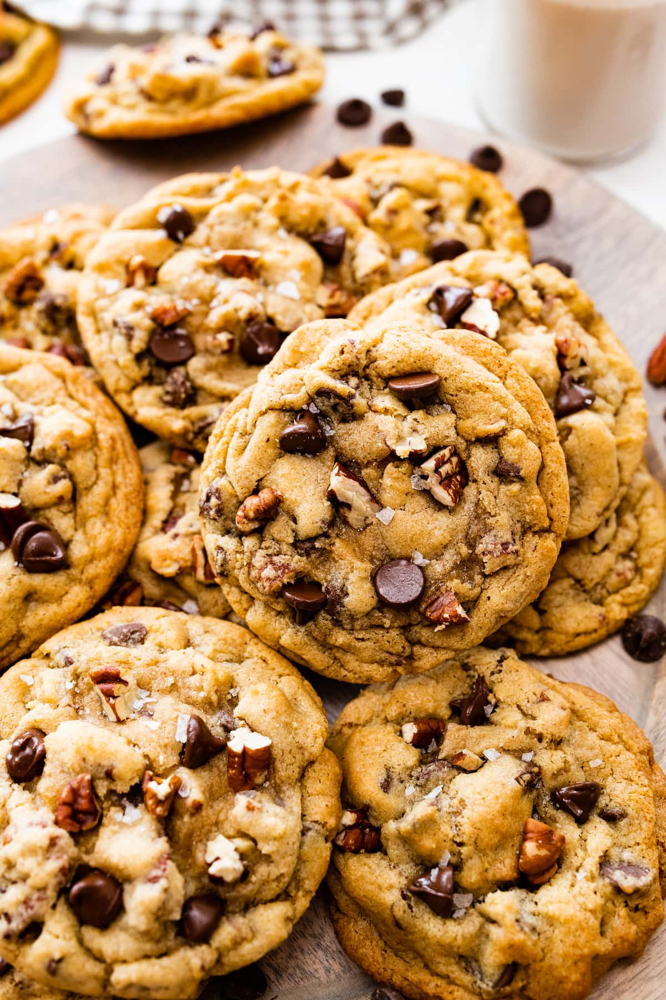

Home
Maple Pecan Cookie Recipe

Description
Soft and chewy chocolate chip cookies with a hint of sweet maple flavor, toasted pecans, chocolate chips, and a little sea salt. These sweet and salty cookies are guaranteed to be a favorite!
Ingredients
- 3 cups all-purpose flour
- 1 teaspoon baking soda
- 1 teaspoon baking powder
- 1 teaspoon kosher salt
- 1/2 teaspoon ground cinnamon
- 1 cup unsalted butter, at cool room temperature
- 1 1/3 cups packed brown sugar
- 1/2 cup granulated sugar
- 2 large eggs
- 2 tablespoons pure maple syrup
- 2 teaspoons pure vanilla extract
- 1 teaspoon maple extract
- 1 1/4 cups roughly chopped toasted pecans*
- 1 1/4 cups chocolate chips
- Flaky sea salt, for sprinkling on cookies
Steps
- Preheat oven to 350 degrees F. Line a large baking sheet with parchment paper or a silicone baking mat and set aside.
- In a medium bowl, whisk together flour, baking soda, baking powder, salt, and cinnamon. Set aside.
- Using a stand mixer (or hand mixer), beat butter and sugars together until creamy and smooth. Add in the egg, maple syrup, vanilla, and maple extract. Mix until combined.
- Turn the mixer off and add the dry ingredients. Mix until just combined. Don’t over mix.
- Stir in the pecans and chocolate chips.
- Roll about 2 tablespoons of the dough into a ball. Pull apart the dough ball with your fingertips and pull into 2 equal halves. Turn the halves so the broken edges are facing up and then press the halves back together, so the top is jagged. You don’t want the balls to be smooth. The jagged tops will give the cookies texture. Place dough balls on prepared baking sheet, about 2-inches apart.
- Bake cookies for 10 to 12 minutes or until the edges are slightly golden brown around the edges, but the centers are still soft. Don’t over bake.
- Remove from oven and sprinkle with flaky sea salt. Let cookies cool on the baking sheet for 5 minutes. Transfer to a wire cooling rack and cool completely.
Cook's Note
To toast the pecans: On a parchment paper lined baking sheet, spread the nuts out in a single layer. Bake for 5 to 10 minutes in a 350 degree oven until the nuts darken in color a couple shades and the pecans smell nutty. Watch them closely so they don’t burn. Let them cool completely, then chop them up! Store cookies in an airtight container on the counter for up to 3 days. Freeze cookies for up to 3 months.